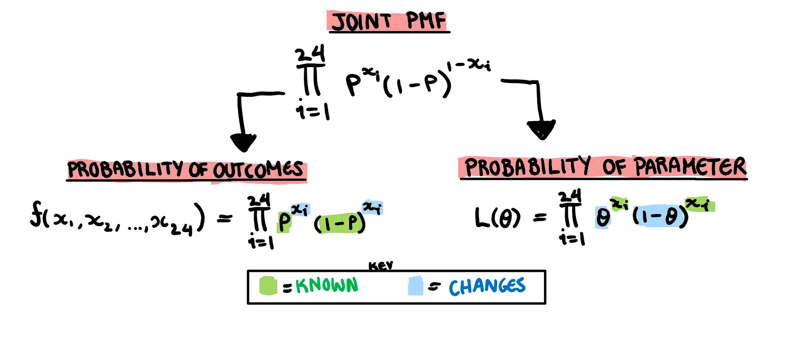

How a 5th Grader Makes $1500 in a Single Night (and How They Could Make More Using MLE)
Is The Problem The Parents or the Kid?
As a child, your parents are seen as deities that can do no wrong, that is until you are doing a first aid course 10 years later and learn that a broken arm is not an “I’ll take you to the hospital tomorrow if it still hurts” level emergency. Growing up I started to realise my Dad’s life lessons were somewhat unorthodox and below are some of my favourite quotes.
- “If you are going to light fires with your brother, make sure you do it by the pool. The ground is paved and if you set something on fire I’d rather it be you than the house”
- “I’m not going to any of your soccer games until you turn 12. I watched your brother play when he was younger. It was very boring and the other kids parents were insufferable”
- “If someone wants you to do something, they will probably pay you for it. So make sure you get paid. Unless I ask, then you need to do it for free.”
The last quote was probably the worst thing he taught us, at least for his financial security. It meant my siblings and I learnt to squeeze as much money out of my parents as we could. They paid me to cut my hair, get to school on time, go to swimming lessons, nothing was ever done for free. I even haggled my baby teeth with my mum for $50. This idea expanded to school yard, where my peers were much poorer than my parents, but also easier to part from their money. In grade 2 I had a period of selling stickers outside the tuckshop for spare change. The profit system was simple, sell stickers to my peers for a 10000% mark up. This plan was eventually shut down by “the man” i.e. the staff because some parents had complained about their kids not even getting lunch and just buying stickers. My most effective and long lasting money making plan however, was birthday parties. By the end of middle school, I was pulling in about $2000 a party. One of the most important elements in making a birthday profitable was the ratio of kids invited to kids that turn up. At the time I did guesstimation on this ratio, but now we are going to look at it in a more formal manner, using Maximum Likelihood Estimation (MLE).
Probability and Likelihood
When I first learnt about likelihood functions I had no idea what was going on. The introduction of \theta and a new function which was basically just a joint density function threw me off. In this post, I want to go through the process of constructing a MLE function from the ground up, and try to avoid some pitfalls I fell into. To get started, here is a drawing of the general relationship between likelihood functions and joint density functions.

The first thing that tripped me up is that these two functions are basically the same thing. They are but they also aren’t. They describe the same relationship but they swap the elements that are unknown and the elements that are constant.
The joint probability density function finds the chance of a particular outcome given that we know what the underlying distribution of all the variables.
The likelihood function asks what is the chance of a specific underlying distribution given a particular set of outcomes.
What is a shape parameter? Well, every distribution has some parameter that decides its shape. The exponential distribution has a single parameter that is also its mean and variance. The normal distribution has 2 different parameters that decide its shape, one for the mean and one for the variance. The result of changing these parameters is illustrated below.
Since our distributions can entirely be determined by this shape parameter (or parameters), rather than trying to think of the density function that made a dataset, we can just boil this question down to finding the parameter that defines the distribution. \theta in our likelihood function is what we use as a stand in for this unknown parameter. Finding the probability distribution of this unknown parameter given some set of outcomes is the goal of Maximum Likelihood Estimation (MLE).
A Mercenary Child’s Birthday Party
When I was in school I used to have birthday parties for financial profit. My parents strictly enforced the rule “party or present”. Either you get to have a party, or you get a birthday present. This rule never bothered me because the idea of having my peers at my house touching all my stuff with their sticky hands wasn’t particularly appealing. That was until I did some basic math. With an average of $30 a kid, a party of about 30 would be enough to easily make close to $1000. Once I got over the laughable ease with which I was about to make a bucket load of money, I started trying to figure out how to maximise revenue. The first issue I had to deal with was people giving actual physical gifts. To deal with this I started putting on the invitations that “I wanted to renovate my room with the money” or something along those lines. I found people were more welcome to giving me straight up cash if they thought it was going to something important. After that, my next biggest profit problem was less than optimal turn out. Holidays, other commitments, kids being grounded, ect., meant that only about 80% of those invited would come. My parents set a limit on the number of people I could have at our house and because they expected the worst (i.e. every single kid turns up) less than 100% turn out was cutting into profits. Eventually, thanks to the adoption of Facebook, I could organise my own events meaning I could give myself a bit of leeway and invite a handful over the limit. Now I had to figure out how many extra people I could invite before my parents noticed I was ignoring their instructions, or the probability any one student would turn up. This is what we are going to use MLE to estimate.
Step 1: Identify Joint Density Function
I mentioned in the beginning that the function that can easily cross between the worlds of the outcomes and parameters is the joint density function, but what is it? Basically it takes a bunch of random variables (in our case, students) and says what is the chance the entire group has a specific outcome (in this case, attend or not attend).
Moving from each students probability to the joint probability is not simple task. We can either create a model that understands the intricate inter-personal relationships of this second grade class, or we can make 3 assumptions that will greatly simplify the problem. Statisticians generally prefer the method that doest require reading children’s diaries and so we are now going to perform these assumptions on my second grade class.
Assumption 1: Independence
The first assumption we are going to make about our students is that they are independent, i.e any particular kid going to my party is not at all influenced by any other student. In doing so we now have a dataset consisting of children who are completely immune to peer pressure, both a school administration and statisticians fantasy. Unfortunately we have also lost some realism along the way. Why do this? Well, right now the only thing we know is each student has a some probability mass function (which we will get to in assumption 3) but no information on how the students interact with each other. What if one student coming means other wont come? or a students coming means another will certainly come? In order to find the probability of this very specific outcome we have ended up with we need information about the variables relationship. Here we can either figure out the complicated interpersonal relationships of the children, or assume they are all independent. With this assumption, the joint PMF is the product of each individual PMF (this is literally the definition of independence). Now our students don’t interact, and we have taken our first step in simplifying our problem.

Assumption 2: Identical
Now our joint PMF is the product of 24 unique PMFs. The problem is, I don’t really care about the individual students (they are all dollar signs to me). I only care about the overall proportion of students. Here we can simplify our problem further by assuming there is some overall class PMF, and every student is just a random variable drawn from that. To use this assumption in our joint density function, we just say the probability of every student coming is the same. Now we have 24 observations drawn from a single distribution, which means we only need a single individual PMF to define the PMF of all the students.
Assumption 3: Identify The Distribution For Individual Parameters
As a final step, we still need some individual PMF to put in the big product we have created. Since every student either comes or doesn’t come, we can easily say the PMF for each student follows a Bernoulli distribution. Ultimately this step just depends on what outcome you want to measure, and since I only really care about a yes/no outcome, a Bernoulli will do just fine. Now we have a joint PMF to work with.

Step 2: Make Your Likelihood Function
Wow what a beautiful joint PDF… What do we do with it? Well I said in the beginning that the function that gives probability of outcomes and the function that gives probability of parameters is the same function just with a different unknown. Here are the two directions we could take with our joint PMF. 
Since in this case our unknown is the parameter, we are going to use the likelihood function. Here we can actually put find the Likelihood function for our particular birthday party results.
L(\theta)=\theta^{18}(1-\theta)^{6}
But to simplify it here with the outcomes wouldn’t be an accurate representation of how we usually have to conduct MLE. So I’m going to leave in the product notation. Now that we have a function that shows how likely different values of \theta (the probability a student turns up) are, we need to find its maximum.
Step 3: Math Time : Logs and Derivatives and More Derivatives
I mostly wanted to focus on the difference between a PMF/PDF and a likelihood function in this post, but for the sake of completeness I’m going to finish the estimation. That being said I’m not going to be very detailed. Our next step in the process is to take the log.
Why take the log?
The answer is really just mathematicians are lazy. From high school you may remember that when you want to find the maximum of a function you take the derivative and set it equal to 0. The thing is, we have a massive product right now, and the product rule is a pain to do. Especially when we have 24 functions multiplied together. Thanks to log laws, taking the log of this nightmare function both doesn’t change the value the maximum is at (thanks to some math stuff I won’t go into) and also means we have to take the derivative of a big sum instead of a big product, which is really easy.
L(\theta)=\prod^{24}_{i=1}\theta^{x_i}(1-\theta)^{1-x_i}
I’m going to do some cosmetic changes before applying the log.
L(\theta)= \theta^{\sum_{i=1}^{24} x_i}(1-\theta)^{24-\sum_{i=1}^{24}x_i}
Then we have our log-likelihood.
logL(\theta)= log(\theta)\sum_{i=1}^{24}x_i+ log(1-\theta)(24-\sum_{i=1}^{24} x_i)
The first derivative
Now we take the first derivative. When our likelihood function has a rate of change of 0, it’s about to fall back down. So we take the derivative with respect to the value we want to maximise and find the parameter that is the most likely given our set of outcomes.
logL'(\theta) = \frac1\theta {\sum_{i=1}^{24} x_i}- \frac1{1-\theta}(24-\sum_{i=1}^{24} x_i)
Since the first order condition is that we would like the first derivative to be equal to 0, this is where I put the hat in because this isn’t true in general, only for our estimate.
\frac1{\hat{\theta}} {\sum_{i=1}^{24} x_i}- \frac1{1-\hat{\theta}}(24-\sum_{i=1}^{24} x_i)=0
Which we solve to find
{\hat{\theta}} = \frac1{24}\sum_{i=1}^{24} x_i
Now that we have the solutions we can substitute in our values from our sample of party go-ers and get the probability any one person will turn up.
{\hat{\theta}} = 0.75
The second derivative
The lazy of us ignore this step, although it is technically still important. I also tend to ignore it, and will do so here for the sake of brevity. Whoops. We already have our estimate, this is more about making sure we have a clean solution. Taking the second derivative ensures our estimate is a maximum, and not some other stationary point.
Conclusion
I used all the money I made from birthday parties to buy about $10 000 worth of manga books because I was a huge Weeb. Sadly I ended up donating them all to the school that expelled me in year 11. Turns out being mercenary enough to make buckets of money as a child doesn’t matter if you waste it all on books you are forced to give away when you move to Melbourne because student accommodation doesn’t come with a wall of free library space. I’m sure there is a lesson in here somewhere.

This work is licensed under a Creative Commons Attribution-NonCommercial-ShareAlike 4.0 International License.